{kind=link}

Before we start explaining Scribus in depth, it might be useful to get a "feeling" for the way Scribus works. For that purpose, you can see how a simple front page of a magazine for an imaginary Rembrandt exhibition is being created. If you want to follow the description provided here, you need:
This is what we want to achieve:
You probably know what happens if you create a new file in a word processor: the program you're working with creates a new page and you can start typing. If a new page is necessary, the word processor will create a new one. This won't work in Scribus (or most other DTP programs). To create a new page, you have to tell the program to do exactly that. The main purpose of a DTP software is to give you a maximum of control over design and content of your document. So we click File > New, and Scribus brings up the following dialog:
| 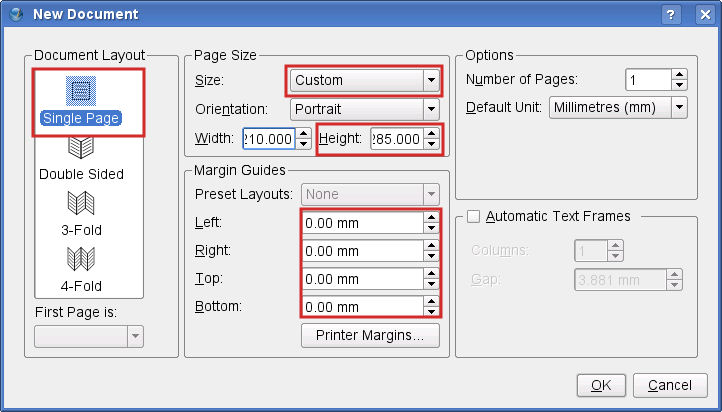 |
For our cover page we will choose a Single Page layout. Set the Page Size to "Custom" and change the default value for height to 285 mm. This is going to be about the same as US Letter size. The cover page won't need any margins, so that we use 0 mm as the value for all page margins. Leave the rest of the default settings as they are.
After clicking the "OK" button, Scribus creates a new page:
|
Next, we need a grey background for our page. Click on the white rectangle in the menu bar or simply press S on the keyboard. Yes, you're reading correctly, pressing S doesn't mean anything will be "typed" on the page. To type, you need a special environment called text frame, as you will see below. In this case, we need a shape, thus the keyboard S command.
Your mouse pointer now turns into a rectangle with a + on its upper left corner. Click and hold the mouse button, then drag the + across the page and let up – you have just created a shape. Size, position and color don't matter here, as we will change them immediately.
| 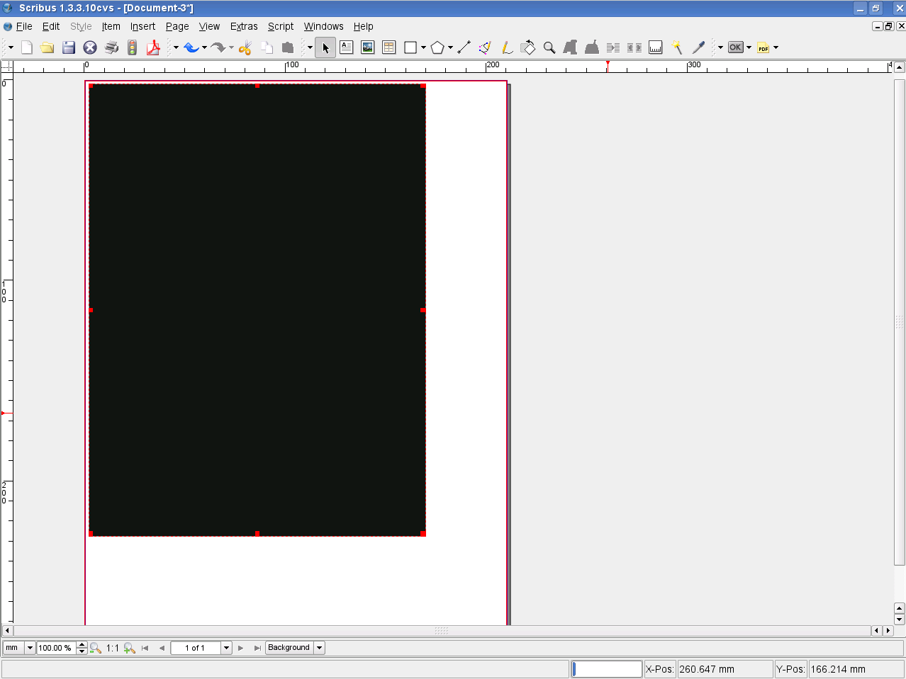 |
If you haven't clicked somewhere else on screen, your new rectangle is still selected, which means it is outlined in red dots and so-called handles at each corner and the middle of a line. Now use Windows > Properties or press F2 to bring up the Properties Palette, which is the Swiss Army Knife of Scribus. You will learn a lot more about its use later. For the time being, let's stay in the default tab of this dialog, which is called "X,Y,Z". The more complex a document is, the more useful it is to give each object a unique name. It will make it easier to find and to select it later on. Not surprisingly, we'll call our Shape "Background".
Next, make our rectangle match the size of the page. Remember the values we chose for the page? Insert them here, but first don't forget to click on the chain symbol to the right of the boxes for changing the values for width and height. If you try to do this without unlinking that chain, you will see that a change in one value changes the other in a proportional way, and it will seem like you are forever stuck, which you will be until you unlink that chain.
Now that our rectangle has exactly the size of our page, you need to make sure that it matches the page borders by setting its X and Y positions to 0.000 – if you just delete what is there and replace with 0, then press Tab or Enter, Scribus will make the decimal point and other zeros for you.
| 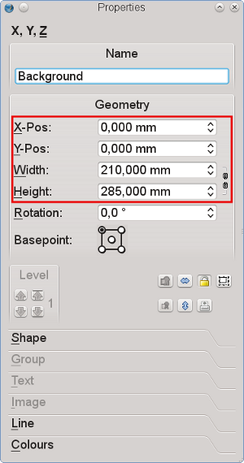 |
By default, Scribus uses black as the color for shapes, which is not what is needed here. Provided our shape is still selected, we use the Properties Palette again to assign a new color to it. For that purpose we select the "Colors" tab. From the list select "Grey41" as the Fill Color.
Each shape and each frame in Scribus has a border. In the case of shapes the default color is always black. Since we don't want any color for our Frame border, click on the symbol with the pen and select the color "None", which is always at the top of the list.
| 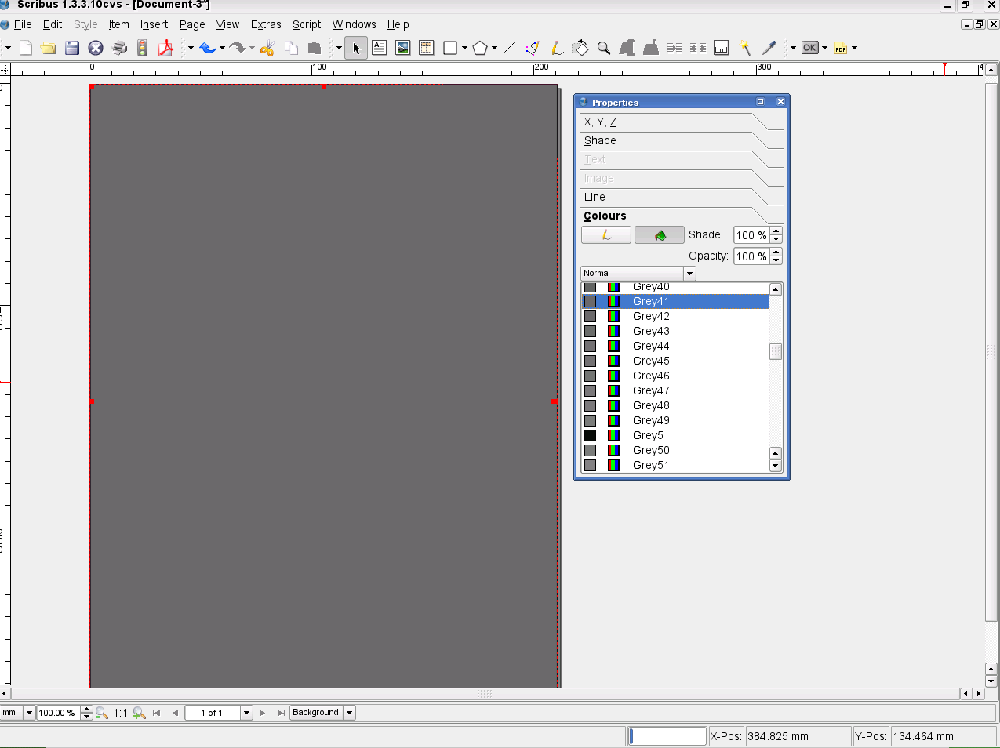 |
Our page background is now finished. To make sure it isn't changed unintentionally, return to the "X,Y,Z" tab of the Properties Palette and click on the "lock" symbol, so that our background is protected from any further changes.
| 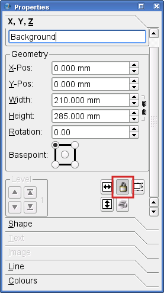 |
Rename this image frame "Rembrandt1", and for width and height enter the values as shown in the screenshot below. Our cover picture needs to be placed exactly in the lower right of our page. How can this be achieved? Actually, it's quite simple. We know the X and Y coordinates of our page, namely 210 mm and 285 mm. So you can enter these values in "X-Pos" and "Y-Pos", but wait! Not so fast. Before you do that, first change the Basepoint of our object. When you set 0.000 values for our background shape, the values were for the upper left of the page. But our image will have to align to our lower right page margins, so we change the Basepoint to lower right before we enter the X and Y values. Also, fix the size of our image frame by locking it:
 |
To make our design a bit more stylish, let's add an edited copy of it. We won't see much of it, just a small stripe on the left. Use Item > Multiple Duplicate for this operation, because it allows us to enter precise numbers for horizontal and vertical shift. We need one copy, and for "Horizontal Shift", insert -6mm, as you want to place the copy on the left of the cover image:
| 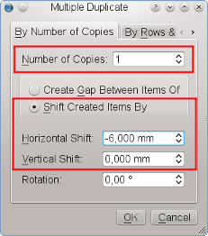 |
Since the new image frame is a copy of "Rembrandt1", there is no need to change its size, and the position has been determined by the copying action. Assign the name "Rembrandt2" to the frame, but there's another problem: The new image frame is placed on top of the frame for the cover picture. The solution is to move it behind the cover picture. So far, 3 items have been created, and each new object is placed on top of the others. Therefore, we simply move the copy one level down, i.e. behind "Rembrandt1":
| 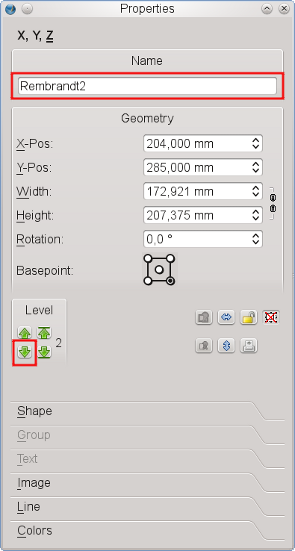 |
Now we have to become a little more serious and get stuff from outside of Scribus into our document. To load our cover picture into "Rembrandt1", right-click on the Frame and click on "Get Image":
| 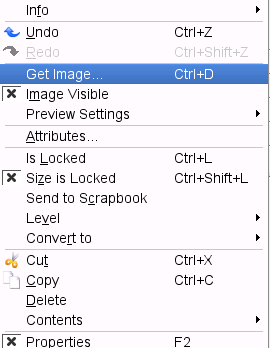 |
This will open a file dialog, but, as usual with exhibitions, there are loads of images with similar names in one directory. How can we identify the correct file? Houston, we have a problem! Not. Fortunately, Scribus offers a preview in its file dialog for images:
| 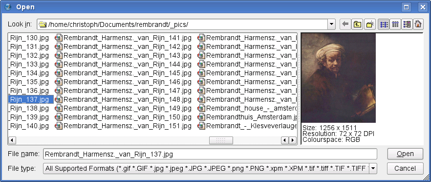 |
Now that we have identified the correct version of the file, click on the "Open" button or just double-click, but what's that?
| 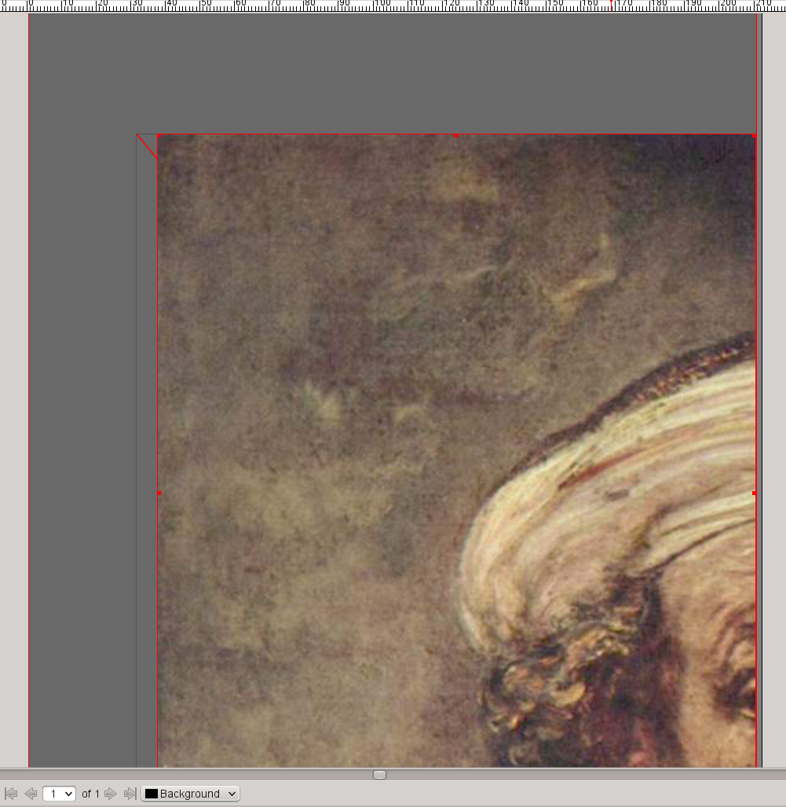 |
It seems obvious that the size of the image and the size of the image frame are not identical twins, but fortunately, the Properties Palette will come to our rescue and force them to behave as if they were. In the "Image" tab check "Scale to Frame Size" and "Proportional" and our cover picture will be perfectly placed:
| 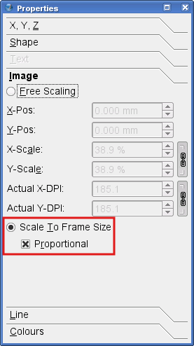 |
The next thing we need is a copy of the "Rembrandt1" content in "Rembrandt2". Right-click on "Rembrandt1" and click "Contents > Copy". Then right-click on the visible stripe of "Rembrandt2" and click "Contents > Insert". The result is everything but spectacular, so that you will need to apply some magic to "Rembrandt2". Once again, use the right mouse button to bring up the context menu, this time to bring up the image effects dialog:
| 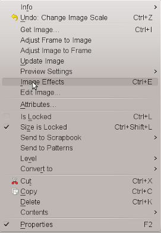 |
In the image effects dialog, let's go all out and apply four different effects to the image: invert, blur (values are radius: 7.0 and value: 5.0), greyscale, and brightness (set to -43):
 |
Now, that looks a lot better, doesn't it?
| 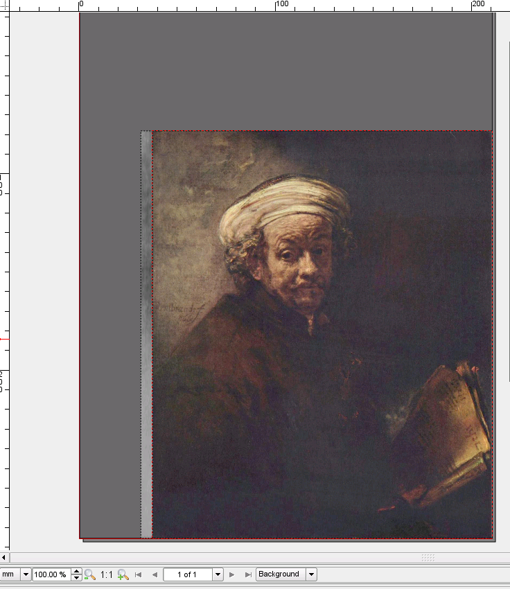 |
Next, let's tell our audience who the hero in the image is. For that purpose, create a text frame by clicking on the Text Frame icon in the toolbar or by pressing the T key – surely you're seeing this pattern now. You can create this frame by dragging, just as you did with the shape. It should be big enough to contain the text as shown below. Then double-click on the text frame and type REMBRANDT. Next, click somewhere else on screen and select the text frame again by clicking on it (single click).
Open the Properties Palette (F2) and open the "Text" tab. In the font selector choose the "Gentium" font, set the font size to 97 pt and choose the text color "White" for Rembrandt's name. The result should look like this:
| 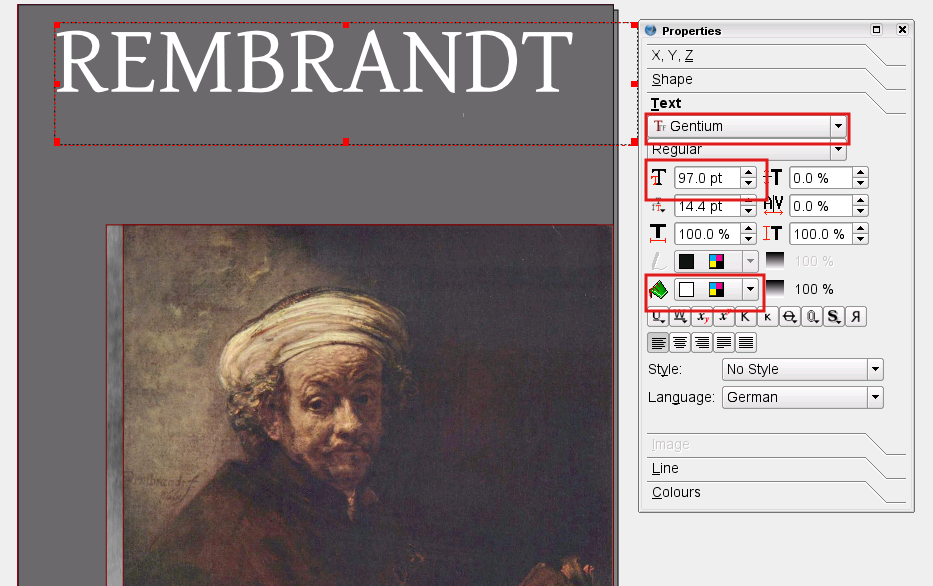 |
So far, our cover looks ok, but a bit boring. Time to add some tasteful features. Historical facts are on our side when we try to accomplish our task: Rembrandt was the man's (admittedly uncommon) first name, while his surname was "van Rijn". So create another text frame, double-click and type VAN RIJN. Choose the same font and the same font size as in the first text frame, but instead of white select "Pink2". "What?" you say, "Pink?". Rembrandt would shoot you on the spot!" Sure he would, if he wouldn't have seen where we're going with this, and we're not finished yet. Switch to the "Color" tab and set "Shade" to 50% and "Opacity" to 20%. Better now? I told you so, and even Rembrandt is happy with the result – you can almost see him smile.
Finally, move the "Van Rijn" frame one level down, behind the "Rembrandt" frame:
| 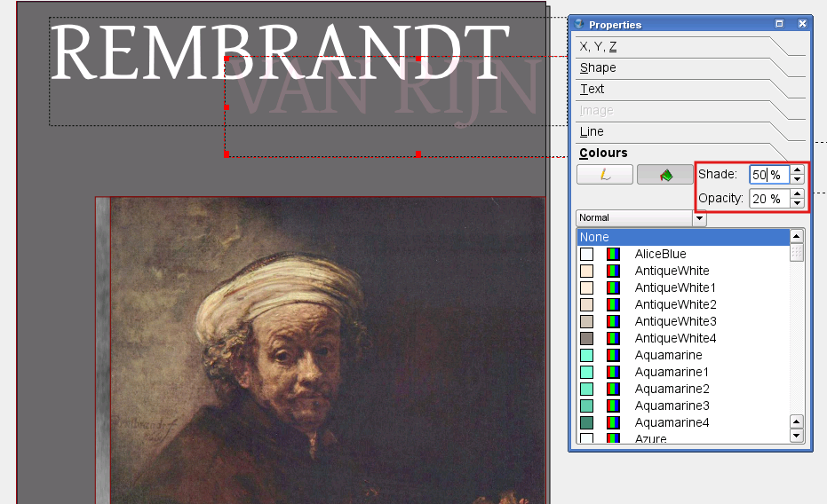 |
Now add 3 other text frames and insert the texts "1606", "2006" and "Painting the Dutch Golden Century". Use the Gentium font for all text frames. The numbers need a font size of 53 pt and the text one of 31 pt. Select text colors that resemble those you see on screen. After what you've learned so far, this should already be easy. Here's a design tip: notice how pleasing this looks, even though we are using different colors and sizes, when we use the same font for all these text elements.
 |
To finish our title, draw a straight line by clicking on the "Line" icon in the Toolbar and dragging with the mouse. Draw your mouse from left to to right and press Ctrl while you drag to make sure the line is exactly horizontal. Then open the Properties Palette and switch to the "Line" tab. Set the Line Width to 0.5 pt, then open the "Colors" tab. Here you open the color list for lines (pen icon) and select "WhiteSmoke" from the list.
Finally, move our Line halfway between the "1606" and the "2006" text frames.
| 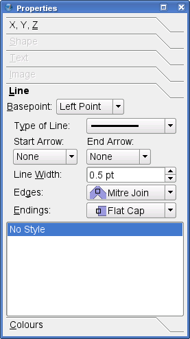 |
The final steps include adding an imaginary publishing company and its logo. We'll decide in modesty to call the company "Scribus Publishing". That way, we need not rack our brains about a logo, but can simply use the Scribus logo. You'll find it in the folder ~/share/scribus/icons, where ~ is your Scribus installation directory. The filename is Scribusicon.png.
Now create a small Image Frame at the bottom our page, between the page border and the cover image(s). Make sure the fill color of the image frame is set to "None", because we are going to import an image with a transparent background. Then, as with our first image, we import the icon via right-click > Get Image. To prevent the icon's colors from interfering with the colors chosen for our layout, open the Image Effects dialog as explained in Step Two. Setting the image to "Greyscale" and raising the contrast makes sure the logo won't "disappear", and at the same time it won't clash with the rest of our colors.
| 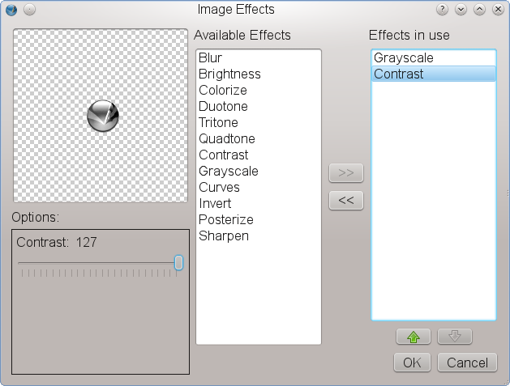 |
To add our company name, create a Text Frame somewhere, call it "ScribusPublishing" in the "X,Y,Z" tab of the Properties Palette and enter the text "Scribus Publishing". Choose "Bitstream Vera Sans" as the font, set the font size to 13 pt and the font color to "Grey97".
Finally, rotate the text frame 90 degrees. The "X,Y,Z" tab of the Properties Palette is the right place to do this. Just change the value for "Rotation" to 90:
 |
Now use the mouse to move the rotated text frame to a position above the Scribus logo. Now click File > Save, enter "Rembrandt-tp" as the file name and click "OK". Voilà! You just successfully created your first document in Scribus. It wasn't that hard, was it?